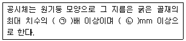

건설재료시험기능사 (2015-04-04 기출문제)
1과목: 건설재료
1. 화력발전소에서 미분탄을 완전 연소시켰을 때 전기집진기로 잡은 작은 미립자로서 냉각되면 구형(球形)이 되고 표면이 미끄러워져서 이를 콘크리트에 혼입하면 반죽질기가 좋아지는 것은?
- 광재(slag)
- 실리카
- 플라이애시
- 염화칼슘
(정답률: 83%)

2. 경량골재에 속하는 것은?
- 강자갈
- 화산자갈
- 산자갈
- 바다자갈
(정답률: 83%)
3. 블리딩이 심할 경우 콘크리트에 발생하는 현상에 대한 설명으로 옳은 것은?
- 강도가 증가한다.
- 수밀성이 커진다.
- 내구성이 증가한다.
- 굵은 골재가 모르타르로부터 분리된다.
(정답률: 82%)
4. 석재의 분류에서 화성암에 속하는 것은?
- 응회암
- 석회암
- 점판암
- 안산암
(정답률: 80%)
5. 목재의 강도에 대한 일반적인 설명으로 틀린 것은?
- 섬유에 평행방향의 인장강도는 압축강도 보다 작다.
- 일반적으로 밀도가 크면 압축강도도 크다.
- 목재의 함수율과 강도는 반비례한다.
- 휨강도는 전단강도 보다 크다.
(정답률: 58%)
6. 감수제의 특징을 설명한 것 중 옳지 않은 것은?
- 시멘트풀의 유동성을 증가 시킨다.
- 수화작용이 느리고 강도가 감소된다.
- 콘크리트가 굳은 뒤에는 내구성이 커진다.
- 워커빌리티를 좋게 하고 단위수량을 줄일 수 있다.
(정답률: 67%)
7. 채석장, 노천굴착, 대발파, 수중발파에 가장 알맞은 폭약은?
- 칼릿
- 흑색화약
- 니트로글리세린
- 규조토다이너마이트
(정답률: 68%)
8. 다음 중 기폭용품에 속하지 않는 것은?
- 도화선
- 도폭선
- 뇌관
- 다이너마이트
(정답률: 73%)
9. 굳지않은 콘크리트에 포함된 공기량에 영향을 미치는 요소에 대한 설명으로 틀린 것은?
- 시멘트의 분말도가 높을수록 공기량은 감소하는 경향이 있다.
- AE제의 사용량이 증가하면 공기량은 감소하는 경향이 있다.
- 잔골재량이 많을수록 공기량이 증가한다.
- 콘크리트의 온도가 낮을수록 공기량은 증가한다.
(정답률: 43%)
10. 콘크리트부재의 크리프(creep)에 대한 설명 중 옳지 않은 것은?
- 물-시멘트비가 작을수록 크리프는 크게 일어난다.
- 하중 재하시 콘크리트의 재령이 작을수록 크리프는 크게 일어난다.
- 부재의 치수가 작을수록 크리프는 크게 일어난다.
- 작용하는 응력이 클수록 크리프는 크게 일어난다.
(정답률: 59%)
11. 다음 중 콘크리트의 압축강도에 가장 큰 영향을 미치는 요인은?
- 골재와 시멘트의 중량
- 물-시멘트비의 비
- 굵은 골재와 잔골재의 비
- 물과 골재의 중량비
(정답률: 81%)
12. 공기 단축을 할 수 있고 한중 콘크리트와 수중 콘크리트를 시공하기에 적합한 시멘트는?
- 조강포틀랜드 시멘트
- 중용열 시멘트
- 보통포틀랜드 시멘트
- 고로 시멘트
(정답률: 70%)
13. 시멘트를 분류할 때 혼합시멘트에 속하지 않는 것은?
- 포졸란 시멘트
- 고로 슬래그 시멘트
- 알루미나 시멘트
- 플라이애시 시멘트
(정답률: 81%)
14. 골재의 입도에 대한 설명으로 적합한 것은?
- 1m3의 골재의 질량
- 골재에서 물을 포함하고 있는 상태
- 골재를 용기 속에 채워 넣을 때 골재 사이에 존재하는 공극
- 골재의 크고 작은 입자의 혼합된 정도
(정답률: 74%)
15. 콘크리트용 골재로서 필요한 조건을 설명한 것으로 옳지 않은 것은?
- 깨끗하고 유해물을 함유하지 않을 것
- 마모에 대한 저항성이 클 것
- 입도 분포가 균등할 것
- 모양은 입방체 또는 둥근형에 가까울 것
(정답률: 66%)
16. 흙의 비중시험에 사용되는 시료로 적당한 것은?
- 9.5mm체 통과시료
- 19mm체 통과시료
- 37.5mm체 통과시료
- 53mm체 통과시료
(정답률: 67%)
17. 흙의 비중시험에 사용되는 시험기구가 아닌 것은?
- 피크노미터
- 데시케이터
- 온도계
- 다이얼게이지
(정답률: 63%)
18. 액성한계가 42.8%이고 소성한계는 32.2%일 때 소성지수를 구하면?
- 10.6
- 12.8
- 21.2
- 42.4
(정답률: 88%)
19. 흙의 함수비 측정에서 항온 건조로의 온도는 몇 ℃로 유지하여야 하는가?
- 80±3℃
- 90±5℃
- 100±5℃
- 110±5℃
(정답률: 83%)
20. 워싱턴형 공기량측정기를 사용하는 시험에 대한 설명으로 옳은 것은?
- 주수법과 무주수법이 있다.
- 부피법과 무부피법이 있다.
- 압력법과 무압력법이 있다.
- 질량법과 무질량법이 있다.
(정답률: 61%)
2과목: 건설재료시험
21. 굳지 않은 콘크리트의 슬럼프 시험에서 슬럼프는 어느 정도의 정밀도로 측정하여야 하는가?
- 1mm
- 5mm
- 1cm
- 5cm
(정답률: 78%)
22. 흙의 함수량시험에 사용되는 시험기구가 아닌 것은?
- 데시케이터
- 저울
- 항온건조로
- 르샤틀리에 비중병
(정답률: 79%)
23. 시멘트 비중시험에 사용하는 시료소서 포틀랜드 시멘트는 1회분 시험으로 약 몇 g이 필요한가?
- 56g
- 64g
- 75g
- 83g
(정답률: 85%)
24. 흙의 시험 중 수은을 사용하는 시험은?
- 수축한계시험
- 액성한계시험
- 비중시험
- 체가름시험
(정답률: 77%)
25. 콘크리트 슬럼프 시험에서 슬럼프 콘에 시료를 채울 때 각 층의 다짐횟수는?
- 20회
- 25회
- 30회
- 35회
(정답률: 93%)
26. 콘크리트의 블리딩에 관한 설명 중 옳지 않은 것은?
- 묽은반죽의 콘크리트에서 타설높이가 높으면 블리딩이 많이 생긴다.
- 블리딩량이 많으면 철근과 콘크리트의 부착력이 떨어진다.
- 블리딩량이 많으면 수밀성이 좋아진다.
- 블리딩량이 많으면 레이턴스도 크다.
(정답률: 74%)
27. 아스팔트 침입도 시험에 대한 설명으로 옳은 것은?
- 100g의 추에 5초 동안 침의 관입량이 0.1mm일 때를 침입도 “1”이라 한다.
- 100g의 추에 5초 동안 침의 관입량이 1mm일 때를 침입도 “1”이라 한다.
- 100g의 추에 10초 동안 침의 관입량이 0.1mm일 때를 침입도 “1”이라 한다.
- 100g의 추에 10초 동안 침의 관입량이 1mm일 때를 침입도 “1”이라 한다.
(정답률: 63%)
28. 골재의 체가름 시험에서 조립률(F.M)을 구할 때 사용되지 않는 체는?
- 10mm
- 20mm
- 30mm
- 40mm
(정답률: 82%)
29. 반죽된 흙의 함수비를 달리하여 각 함수비에 대한 황동 접시의 낙하 횟수와의 관계를 반대수 모눈종이에 직선으로 나타낸 그래프를 무엇이라 하는가?
- 유동 곡선
- 단위무게 곡선
- 소성도 곡선
- 액성한계 곡선
(정답률: 69%)
30. 콘크리트 배합설계시 단위수량이 171kg/m3, 물-시멘트비가 50%일 때 단위시멘트량은?
- 100kg/m3
- 171kg/m3
- 342kg/m3
- 400kg/m3
(정답률: 84%)
31. 흙의 비중시험에서 비중병에 시료와 증류수를 넣고 10분 이상 끓이는 이유로 가장 타당한 것은?
- 흙입자의 무게를 정확히 알기 위하여
- 흙입자속에 있는 기포를 완전히 제거하기 위하여
- 증류수와 흙이 잘 섞이게 하기 위하여
- 비중병을 검정하기 위하여
(정답률: 90%)
32. 콘크리트의 쪼갬인장강도 시험에 사용되는 공시체의 규격에 대한 아래 표의 설명에서 ()에 들어갈 수치로 알맞은 것은?

- ㉠ 2, ㉡ 100
- ㉠ 3, ㉡ 150
- ㉠ 4, ㉡ 100
- ㉠ 5, ㉡ 150
(정답률: 55%)
33. 굳지 않은 콘크리트 블리딩 시험에서 시료의 블리딩 물의 총량이 75g이고 시료에 함유된 물의 총 무게가 2.07g일 때 블리딩률(%)을 구한 값은?(오류 신고가 접수된 문제입니다. 반드시 정답과 해설을 확인하시기 바랍니다.)
- 3.15%
- 3.25%
- 3.32%
- 3.62%
(정답률: 49%)
34. 굵은 골재의 마모시험에 사용되는 가장 중요한 시험기는?
- 징기시험기
- 로스엔젤레스시험기
- 표준침
- 원심분리시험기
(정답률: 89%)
35. 시멘트 비중시험에 사용되는 재료로 옳은 것은?
- 수은
- 광유
- 경유
- 알코올
(정답률: 76%)
36. 다짐봉을 사용하여 콘크리트 휨강도시험용 공시체를 제작하는 경우 다짐횟수는 표면적 약 몇 mm2당 1회의 비율로 다지는가?
- 2000mm2
- 1500mm2
- 1000mm2
- 500mm2
(정답률: 76%)
37. 콘크리트 배합설계에 사용하는 공재의 밀도는 어떤 상태의 밀도인가?
- 습윤 상태
- 절대 건조 상태
- 공기중 건조 상태
- 표면 건조 포화 상태
(정답률: 80%)
38. 아스팔트(Asphalt)침입도 시험을 시행하는 목적은?
- 아스팔트 굳기 정도측정
- 아스팔트 신도측정
- 아스팔트 비중측정
- 아스팔트 입도측정
(정답률: 70%)
39. 골재의 체가름 시험에서 체가름 작업은 언제까지 하는가?
- 1분간 각 체를 통과하는 것이 전 시료 질량의 0.1% 이하로 될 때까지 작업을 한다.
- 1분간 각 체를 통과하는 것이 전 시료 질량의 0.2% 미만으로 될 때까지 작업을 한다.
- 2분간 각 체를 통과하는 것이 전 시료 질량의 1% 이하로 될 때까지 작업을 한다.
- 2분간 각 체를 통과하는 것이 전 시료 질량의 2% 미만으로 될 때까지 작업을 한다.
(정답률: 52%)
40. 봉 다지기에 의한 골재의 단위용적 질량 시험을 할 때 사용하는 다짐봉의 지름은 몇 mm인가?
- 8mm
- 10mm
- 16mm
- 20mm
(정답률: 63%)
3과목: 토질
41. 콘크리트 슬럼프 시험을 할 때 콘크리트를 처음 넣는 양은 슬럼프 시험용 콘 부피의 얼마까지 넣는가?
- 1/2
- 1/3
- 1/4
- 1/5
(정답률: 88%)
42. 다음 중 시멘트 분말도 단위로 옳은 것은?
- N
- g
- cm2
- cm2/g
(정답률: 78%)
43. 액성한계 시험시 황동 접시를 대에 설치하여 크랭크를 회전 시켜서 1초 동안에 2회의 비율로 대위에 떨어뜨린 후 흠의 밑 부분에 흙의 약 몇 cm가 접촉 되도록 이 작업을 계속하는가?
- 0.5cm
- 1.0cm
- 1.5cm
- 1.8cm
(정답률: 67%)
44. 잔골재의 체가름 시험용 시료 재취 방법으로 옳은 것은?
- 2분법
- 3분법
- 4분법
- 5분법
(정답률: 77%)
45. 금이나 납 등을 두드릴 때 얇게 펴지는 것과 같은 성질을 무엇이라 하는가?
- 연성
- 전성
- 취성
- 인성
(정답률: 79%)
46. 도로지반의 평판재하시험에서 1.25mm가 침하될 때 하중 강도는 4.0kg/cm2이었다. 지지력계수는?
- 20kg/cm3
- 24kg/cm3
- 28kg/cm3
- 32kg/cm3
(정답률: 52%)
47. 점성토에 대한 일축압축 시험결과 자연시료의 일축압축 강도 qu=1.25kg/cm2, 흐트러진 시료의 일축압축 강도 qur=0.25kg/cm2일 때 이 흙의 예민비는?
- 2.0
- 3.0
- 4.0
- 5.0
(정답률: 58%)
48. 투수계수(k)의 단위로 옳은 것은?
- cm2/sec
- cm3/min
- cm/sec2
- cm/sec
(정답률: 47%)
49. 유선망을 작도하는 주된 이유는?
- 전단강도를 알기 위하여
- 침하량과 침하속도를 알기 위하여
- 침투유량과 간극수압을 알기 위하여
- .지지력을 알기 위하여
(정답률: 56%)
50. 자연함수비가 액성한계보다 크다면 그 흙은?
- 고체 상태에 있다.
- 소성 상태에 있다.
- 액체 상태에 있다.
- 반고체 상태에 있다.
(정답률: 70%)
51. 말뚝의 지지력을 구하는 지지력공식 중에서 정역학적 지지력 공식에 속하는 것은?
- 마이어호프(Meyerhof)공식
- 힐리(Hiley)공식
- 엔지니어링뉴스(Engineering News)공식
- 샌더(Sander)공식
(정답률: 59%)
52. 어떤 흙의 비중이 2.0, 간극비가 1.0일 때 이 흙의 수중 단위 무게는?
- 0.5g/cm3
- 0.7g/cm3
- 1.0g/cm3
- 1.5g/cm3
(정답률: 46%)
53. 아스팔트 포장과 같이 가요성 포장의 두께를 결정하는데 주로 쓰이는 값은?
- 압밀계수(Cv)값
- 지지력비(CBR)값
- 콘지지력(qc)값
- 일축압축강도(qu)값
(정답률: 71%)
54. 현장다짐을 할 때에 현장 흙의 단위 무게를 측정하는 방법으로 옳지 않은 것은?
- 절삭법
- 아스팔트 치환법
- 고무막법
- 모래 치환법
(정답률: 57%)
55. 지름 50mm, 높이 125mm인 용기에 현장 습윤상태의 흙 시료를 채취하여 시료의 무게를 측정하였더니 시료의 무게가 466g 이었다. 이 흙의 습윤단위 무게는?
- 1.2g/cm3
- 1.5g/cm3
- 1.9g/cm3
- 2.0g/cm3
(정답률: 37%)
56. 흙의 다짐에 대한 설명으로 틀린 것은?
- 조립토일수록 최대건조단위중량은 작아진다.
- 조립토일수록 최적함수비는 작아진다.
- 양입도일수록 최적함수비는 작아진다.
- 양입도일수록 최대건조단위중량은 커진다.
(정답률: 35%)
57. 통일분류법 미 AASHTO분류법으로 흙을 분류할 때, 필요한 요소가 아닌 것은?
- 액성한계
- 수축한계
- 소성지수
- 흙의 입도
(정답률: 35%)
58. 다음의 기초 중 얕은 기초에 해당되는 것은?
- 말뚝기초
- 피어기초
- 우물통기초
- 전면기초
(정답률: 79%)
59. 연약한 점토지반에서 전단강도를 구하기 위하여 실시하는 현장 시험법은?
- Vane 시험
- 현장 C.B.R 시험
- 직접전단시험
- 압밀시험
(정답률: 76%)
60. 흙의 다짐효과에 대한 설명으로 옳지 않은 것은?
- 압축성이 작아진다.
- 흙의 역학적 강도와 지지력이 감소한다.
- 부착성이 양호해지고 흡수성이 감소한다.
- 투수성이 감소한다.
(정답률: 56%)